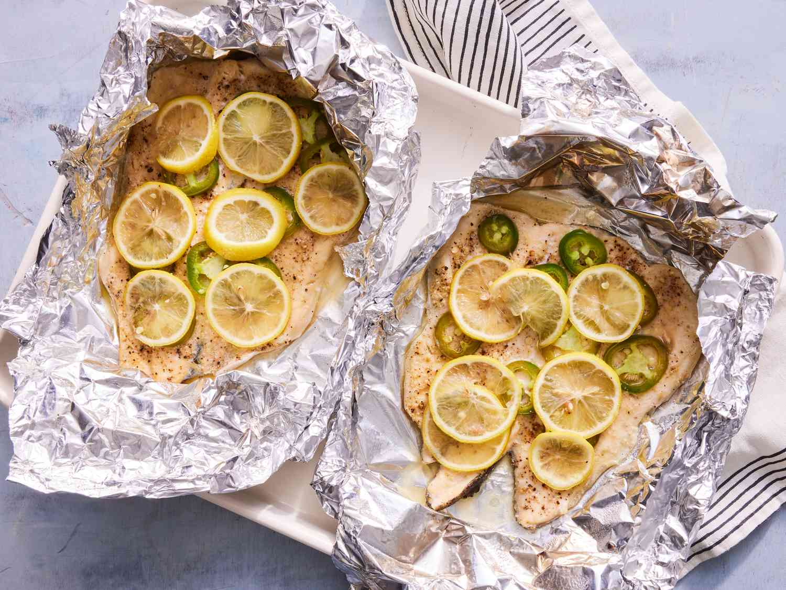

Fish in Foil

Directions
Baked fish in foil is a "no-smell" fish recipe, and the only one I make for my family (I hate fish, they love it!).
Take foil packets to the table for service, and keep the packets around for wrapping and discarding bones and skin.
Then when dinner's done, haul those babies to the outside trash.
Igridients
- 2 rainbow trout fillets
- 1 tablespoon olive oil
- 2 teaspoons garlic salt
- 1 teaspoon ground black pepper
- 2 sheets heavy-duty aluminum foil
- 1 fresh jalapeno pepper, sliced
- 1 lemon, sliced
Directions
- Gather all ingredients. Preheat the oven to 400 degrees F (200 degrees C).
- Rinse and pat fillets dry. Rub fillets with olive oil, and season with garlic salt and black pepper.
- Place each fillet on a large sheet of aluminum foil. Top with jalapeno slices, and squeeze the juice from the ends of the lemon over fillets.
- Arrange remaining lemon slices on top of fillets.